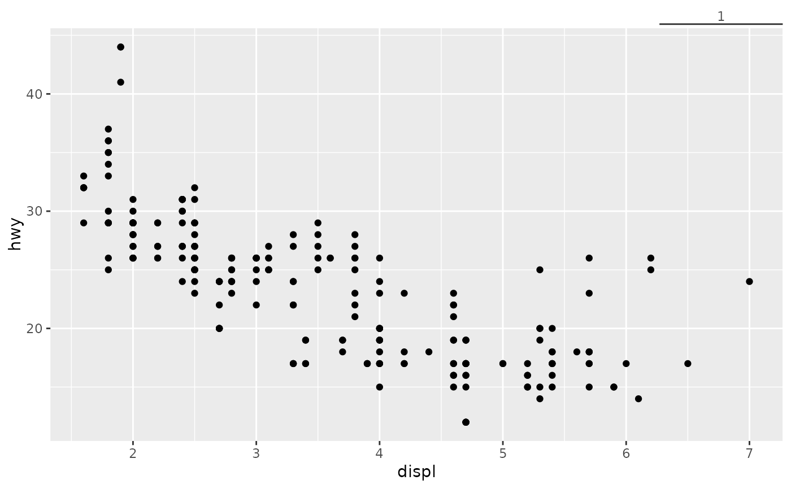

![[Deprecated]](figures/lifecycle-deprecated.svg) This axis guides draws a scale bar to indicate a distance rather than
mark absolute values.
The function is deprecated due to superior alternatives such as
This axis guides draws a scale bar to indicate a distance rather than
mark absolute values.
The function is deprecated due to superior alternatives such as
legendry::primitive_bracket().
Arguments
- title
A character string or expression indicating a title of guide. If
NULL, the title is not shown. By default (waiver()), the name of the scale object or the name specified inlabs()is used for the title.- size
A
numeric(1)for a distance to indicate, in data units. IfNULL(default), the median distance between breaks is taken.- label
A
character(1)to use as scale bar label. IfNULL(default), thesizedistance is fed to the scale's labeller.- colour, color
A
character(1)with a valid colour for colouring the axis text, axis ticks and axis line. Overrules the colour assigned by the theme.- just
A
numeric(1)between 0 and 1 to indicate where the scalebar should be drawn relative to the plot panel. The default (1), places is at the right or at the top.- position
Where this guide should be drawn: one of top, bottom, left, or right.
Theme elements
This axis guide has an alternative understanding of the following theme elements:
axis.ticks.*An
element_line()to draw the scale bar itself.axis.ticks.length.*A
unit()indicating how far the scale bar should be placed from the plot panel. Can be a negative unit to place the scale bar inside the plot panel.axis.text.*The
hjustandvjustparameters are used to justify the text along the scale bar, instead of along itself, in thexandydirections respectively.
See also
Other axis-guides:
guide_axis_logticks(),
guide_axis_manual(),
guide_axis_minor(),
guide_axis_nested(),
guide_axis_truncated()
Examples
# A standard plot
p <- ggplot(mpg, aes(displ, hwy)) +
geom_point()
# Guide as secondary axis
p + guides(x.sec = "axis_scalebar")
#> Warning: `guide_axis_scalebar()` was deprecated in ggh4x 0.3.0.
#> ℹ Please use `legendry::primitive_bracket()` instead.
#> ℹ The deprecated feature was likely used in the ggplot2 package.
#> Please report the issue at <https://github.com/tidyverse/ggplot2/issues>.

# Customising size and label
p + guides(x.sec = guide_axis_scalebar(size = 0.5, label = "0.5 litre"))
# Placing the scale bar on top of the plotting panel
p + guides(x.sec = guide_axis_scalebar(just = 0.95)) +
theme(axis.ticks.length.x.top = unit(-2, "lines"))
# Adding arrows through the axis.ticks theme element
p + guides(y.sec = guide_axis_scalebar(size = 10, label = "10\nmpg")) +
theme(axis.ticks.y.right = element_line(arrow = arrow(ends = "both")))